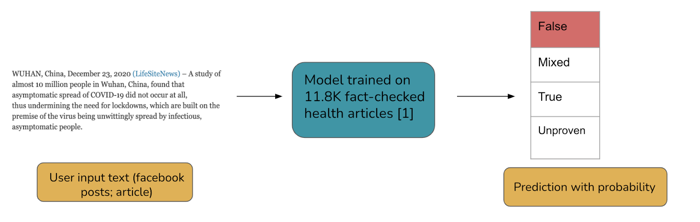
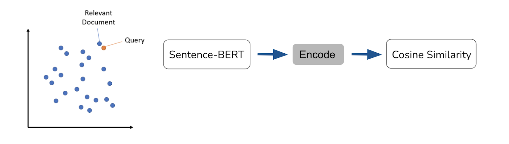
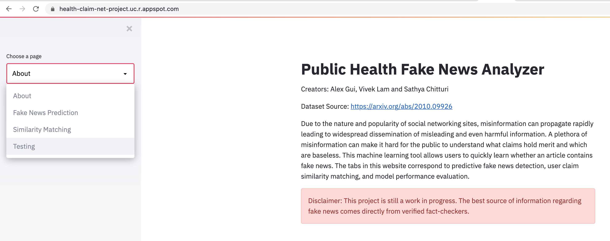

Fact-Checking Tool for Public Health Claims
The Team
- Alex Gui
- Vivek Lam
- Sathya Chitturi
Problem Definition
Due to the nature and popularity of social networking sites, misinformation can propagate rapidly leading to widespread dissemination of misleading and even harmful information. A plethora of misinformation can make it hard for the public to understand what claims hold merit and which are baseless. The process of researching and validating claims can be time-consuming and difficult, leading to many users reading articles and never validating them. To tackle this issue, we made an easy-to-use tool that will help automate fact checking of various claims focusing on the area of public health. Based on the text the user puts into the search box, our system will generate a prediction that classifies the claim as one of True, False, Mixed or Unproven. Additionally, we develop a model which matches sentences in a news article against common claims that exist in a training set of fact-checking data. Much of the prior inspiration for this work can be found in Kotonya et al where the authors generated the dataset used in this project and developed a method to evaluate the veracity of claims and corresponding explanations. With this in mind we tried to address veracity prediction and explainability in our analysis of news articles.
System Design
Our system design used the following steps: 1) Development of ML models and integration with Streamlit 2) Packaging the application into a Docker container 3) Deployment of the application using Google App Engine.

- In order to allow users to have an interactive experience, we designed a web application using Streamlit for fake news detection and claim evaluation. We chose Streamlit for three primary reasons: amenability to rapid prototyping, ready integration with existing ML pipelines and clean user interface. Crucial to the interface design was allowing the users a number of different ways to interact with the platform. Here we allowed the users to either choose to enter text into text boxes directly or enter a URL from which the text could be automatically scraped using the Beautiful Soup python library. Therefore, using this design pipeline we were able to quickly get a ML-powered web-application working on a local host!
- To begin the process of converting our locally hosted website to a searchable website, we used Docker containers. Docker is a tool that can help easily package a local project into an environment known as a container that can be run on another machine. For this project, our Docker container hosted the machine learning models, relevant training and testing data, the Streamlit application file (app.py) as well as a file named “requirements.txt” which contained a list of names of packages needed to run the application.
- With our application packaged, we deployed our Docker container on Google App Engine using the Google Cloud SDK. Essentially, this created a CPU (or sets of CPUs) in the cloud to host the web-app and models. We opted for an auto-scaling option which means that the number of CPUs automatically scale with the number of requests. For example, many CPU cores will be used in periods of high traffic and few CPU cores will be used in periods of low traffic. Here, it is worth noting that we considered other choices for where to host the model including Amazon AWS and Heroku. We opted for Google App Engine over Heroku since we needed more than 500MB of storage; furthermore, we preferred App Engine to AWS in order to take advantage of the $300 free GCP credit!
Machine Learning Component
We build our model to achieve two tasks: veracity prediction and relevant fact-check recommendation. The veracity prediction model is a classifier that takes in a text input and predicts it to be one of true, false, mixed and unproven with the corresponding probabilities. The model is trained on PUBHEALTH, an open source dataset of fact-checked health claims. The dataset contains 11.8k health claims, with the original texts and expert-annotated ground-truth labels and explanations. More details about the dataset can be found here.
We first trained a baseline LSTM (Long Short Term Memory Network), a recurrent neural network that’s widely used in text classification tasks. We fit the tokenizer and classification model from scratch using tensorflow and Keras. We trained the model for 3 epochs using an embedding dimension size of 32. With a very simple architecture, we were able to get decent results on the held-out test set (see Table 1).
In the next iterations, we improved the baseline model leveraging state-of-the-art language model DistilBERT with the huggingface API. Compared to the LSTM which learns one-directional sequentially, BERT makes use of Transformer which encodes the entire sequence at once, and is thus able to learn word embeddings with a deeper context. We used a lightweight pretrained model DistilBERT (a distilled version of BERT, more details can be found here and fine-tuned it on the same training dataset. We trained the model for 5 epochs using warm up steps of 500 and weight-decay of 0.02. All prediction metrics were improved on the test set. The DistilBERT model takes 5x longer time to train, however at inference step, both models are fast in generating online predictions.

The supervised-learning approach is extremely efficient and has good precision to capture signals of misinformation. However, the end-to-end neural network is black-box in nature and the prediction is never perfect, it is very unsatisfying for users to only receive a prediction without knowing how models arrive at certain decisions. Additionally, users don’t gain new information or become better-informed from reading a single classifier result, which defeats the overall purpose of the application. Therefore, we implemented a relevant claim recommendation feature to promote explainability and trust. Based on the user input, our app would search for claims in the training data that are similar to the input sentences. This provides two additional benefits: 1) users will have proxy knowledge of what kind of signals our classifier learned 2) users can read relevant health claims that are fact-checked by reliable sources to better understand the subject-matter.
For implementation, we encode the data on a sentence level using Sentence-BERT. The top recommendations are generated by looking for the nearest neighbors in the embedding space. For each sentence in the user input, we look for most similar claims in the training dataset using cosine similarity. We returned the trigger sentence and most relevant claims with similarity scores above 0.8.

System Evaluation
We conducted offline evaluation on the Pubhealth held-out test set (n = 1235). The first table showed the overall accuracy of the two models. Since our task is multi-label classification, we are interested in the performance per each class, particularly in how discriminative our model is in flagging false information.
| Model | Accuracy (Overall) | F1 (False) |
|---|---|---|
| LSTM | 0.667 | 0.635 |
| DistilBERT Fine Tuned | 0.685 | 0.674 |
Table 1: Overall accuracy of the two models
| Label | F1 | Precision | Recall |
|---|---|---|---|
| False (n = 388 ) | 0.674 | 0.683 | 0.665 |
| Mixed (n = 201) | 0.4 | 0.365 | 0.443 |
| True (n = 599 ) | 0.829 | 0.846 | 0.813 |
| Unproven (n = 47 ) | 0.286 | 0.324 | 0.255 |
Table 2: F1, Precision and Recall per class of Fine-tuned BERT model
Our overall accuracy isn’t amazing, but it is consistent with the results we see in the original pubhealth paper. There are several explanations:
- Multi-label classification is inherently challenging, and since our class sizes are imbalanced, we sometimes suffer from poor performance in the minority classes.
- Text embeddings themselves don’t provide rich enough signals to verify the veracity of content. Our model might be able to pick up certain writing styles and keywords, but they lack the power to predict things that are outside of what experts have fact-checked.
- It is very hard to predict “mixed” and “unproven” (Table 2).
However looking at the breakdown performance per class, we observe that the model did particularly well in predicting true information, meaning that most verified articles aren’t flagged as false or otherwise. This is good because it is equally damaging for the model to misclassify truthful information, and thus make users trust our platform less. It also means that if we count mixed and unproven as “potentially containing false information”, our classifier actually achieved good accuracy on a binary label prediction task (>80%).
Some interesting examples
In addition to system-level evaluation, we provide some interesting instances where the model did particularly well and poorly.
Case 1 (Success, DistilBERT): False information, Model prediction: mixture, p = 0.975
“The notion that the cancer industry isn’t truly looking for a ‘cure’ may seem crazy to many, but the proof seems to be in the numbers. As noted by Your News Wire, if any of the existing low-cost, natural and alternative cancer treatments were ever to be approved, then the healthcare industry’s cornerstone revenue producer would vanish within months. Sadly, it doesn’t appear that big pharma would ever want that to happen. The industry seems to be what is keeping us from a cure. Lets think about how big a business cancer has become over the years. In the 1940’s, before all of the technology and innovation that we have today, just one out of every 16 people was stricken with cancer; by the 70’s, that ratio fell to 1 in 10. Today, one in two males are at risk of developing some form of cancer, and for women that ratio is one in three.”
This is an example of a very successful prediction. The above article leveraged correct data to draw false conclusions. For example, that cancer rate has increased is true information that was included in the training database, but the writing itself is misleading. The model did a good job of predicting mixture.
Case 2 (Failure, DistilBERT): False information, Model prediction: true, p = 0.993
“WUHAN, China, December 23, 2020 (LifeSiteNews) – A study of almost 10 million people in Wuhan, China, found that asymptomatic spread of COVID-19 did not occur at all, thus undermining the need for lockdowns, which are built on the premise of the virus being unwittingly spread by infectious, asymptomatic people. Published in November in the scientific journal Nature Communications, the paper was compiled by 19 scientists, mainly from the Huazhong University of Science and Technology in Wuhan, but also from scientific institutions across China as well as in the U.K. and Australia. It focused on the residents of Wuhan, ground zero for COVID-19, where 9,899,828 people took part in a screening program between May 14 and June 1, which provided clear results as to the possibility of any asymptomatic transmission of the virus.”
This is a case of the model failing completely. We suspect that this is because the article is written very appropriately, and quoted prestigious scientific journals, which all made the claim look legitimate. Given that there is no exact similar claim matched in the training data, the model tends to classify it as true.
Slice analysis
We performed an analysis of the LSTM model performance on various testing dataset slices. Our rationale for doing these experiments was that the LSTM likely makes a number of predictions based on writing style or similar semantics rather than the correct content. Thus, it is very possible that a model written with a “non-standard” with True information might be predicted to be False. Our slices, which included word count, percentage of punctuation, average sentence length, and date published were intended to be style features that might help us learn more about our model’s biases.
Here we would like to highlight an example of the difficulty in interpreting the results of a slice based analysis for a multi-class problem. In this example, we slice the dataset by word count and create two datasets corresponding to whether the articles contain more than or less than 500 words. We found that the accuracy for the shorter articles was 0.77 while the accuracy for the larger articles was 0.60. Although this seems like a large difference in performance, there are some hidden subtleties that are worth considering further. In Table 3, we show the per-class performance for both splits as well as the number of samples in each split. Here, it is clear to see that class distributions of the two datasets are quite different, making a fair comparison challenging. For instance, it is likely that we do well on the lower split dataset because it contains a large fraction of True articles which is the class which is best predicted by our model.
| Labels | Lower Split Accuracy | Lower Split Nsamples | Upper Split Accuracy | Upper Split Nsamples |
|---|---|---|---|---|
| False | 0.7320 | 97 | 0.7526 | 291 |
| Mixture | 0.2041 | 49 | 0.2368 | 152 |
| True | 0.8810 | 311 | 0.7118 | 288 |
| Unproven | 0.3636 | 11 | 0.0588 | 34 |
Table 3: Slice analysis on word count
Similarity Matching
To evaluate the quality of similarity matching, one proxy is to look at the cosine similarity score of the recommended claims. Since we only returned those with similarity scores of more than 0.8, the matching results should be close to each other in the embedding space. However it is less straightforward to evaluate the embedding quality. For the scope of this project, we did not conduct systematic evaluation of semantic similarities of the recommended claims. But we did observe empirically that the recommended claims are semantically relevant to the input article, but they don’t always provide correction to false information. We provide one example in our app demonstration section.
Application Demostration
To serve users, we opted to create a web application for deployment. We settled on this choice as it enabled a highly interactive and user friendly interface. In particular, it is easy to access the website URL via either a phone or a laptop.

There are three core tabs in our streamlit web-application: Fake News Prediction, Similarity Matching and Testing.
Fake News Prediction Tab
The Fake News Prediction tab allows the user to make predictions as to whether a news article contains false claims (“False”) , true claims (“True”), claims of unknown veracity (“Unknown”) or claims which have both true and false elements (“Mixed”). Below, we show an example prediction on text from the following article: Asymptomatic transmission of COVID-19 didn’t occur at all, study of 10 million finds. Here, our LSTM model correctly identifies that this article contains false claims!
Similarity Matching Tab
The Similarity Matching Tab compares sentences in a user input article to fact checked claims made in the PUBHEALTH fact-check dataset. Again we allow users the option of being able to enter either a URL or text. The following video demonstrates the web-app usage when provided the URL corresponding to the article: Study: Covid-19 deadlier than flu. Here, it is clear that the model identifies some relevant claims made in the article including the number of deaths from covid, as well as comparisons between covid and the flu.
Testing Tab
Finally, our “Testing” tab allows users to see the impact of choosing different PUBHEALTH testing slices on the performance of the baseline LSTM model. For this tab, we allow the user to select the break point for the split. For instance, for the word count slicing type, if we select 200, this means that we create two datasets: one with only articles shorter than 200 words and another with only articles larger than 200 words. Check out the video below for a demo of splicing the dataset on the punctuation condition!
Reflection
Overall, our project was quite successful as a proof of concept for the design of a larger ML driven fact-checking platform. We succeeded in developing two models (LSTM and DistilBERT) that can reasonably detect fake news on a wide range of user articles. We achieved promising results on a held-out testing set and found that our model was relatively stable to some common dataset slices. Furthermore, for some inputs, our Sentence-BERT was able to detect claims in the article which were similar to those contained within our training set. We were also able to allocate work and seamlessly integrate among our three team members. Although all members contributed significantly to each part of the project, Alex focused on the model training and validation while Vivek and Satya focused on the UI and deployment. Despite the successes of this project, there are several things that either don’t work or need improvement.
One major area for improvement is on the sentence claim matcher. Currently when certain articles make claims that are outside of the distribution of the training dataset there will be no relevant training claims that can be matched to. This is inherently due to the lack of training data needed for these types of applications. To address this issue it would be useful to periodically scrape fact-checked claims and evidence from websites such as snopes to keep the database up to date and expanding. Additionally, we could incorporate user feedback in our database after being reviewed by us or an external fact-checking group.
Another issue is that we have two separate features, one where the veracity of an article is predicted based primarily on style (LSTM and DistilBERT models), and one where we attempt to extract the content by matching with fact checked claims. An ideal model would be able to combine style and content. Additionally, the claims that we can match sentences to are limited by the data in our training set.
Another improvement we could make pertains to the testing tab. Currently we output the per-class accuracy, but we could additionally output several figures such as histograms and confusion matrices. Better visualization will help users understand quickly how the models perform on different slices.
Broader Impacts
Fake news poses a tremendous risk to the general public. With the high barrier required to fact check certain claims and articles we hope that this project will start to alleviate some of this burden from casual internet users and help people better decide what information they can trust. Although this is the intended use case of our project, we recognize that there is potential harm that can arise from the machine learning models predicting the wrong veracity for some articles. One can easily imagine that if our model predicts that an article has true information, but it is actually fake news this would only cause the user to further believe in the article. To try to mitigate this type of issue, we used the sentence claim matching algorithm where article sentences can be matched to fact-checked claims. If this approach is done correctly the user will in theory have access to training claims that are similar to those in the article and the label associated with the training claims. In addition, we chose to include a tab which showed how our model performed on different slices of the testing data. We believe showing this type of data to users could be a very useful tool for harm mitigation as it allows the users to more fully assess potential biases in the models. At the end of the day because these models are all imperfect we include a disclaimer that these predictions are not a substitute for professional fact-checking.
Contributions
All members contributed significantly to each part of the project. Alex focused more on model training and development. Vivek and Sathya focused more on UI and deployment. We gratefully acknowledge helpful discussions and feedback from Chip Huyen and Xi Yan throughout the project! In addition, special thanks to Navya Lam and Callista Wells for helping find errors and bugs in our UI.
References
We referred the the following models to guide ML model development:
- Sanh, V., Debut, L., Chaumond, J. and Wolf, T., 2019. DistilBERT, a distilled version of BERT: smaller, faster, cheaper and lighter. arXiv preprint arXiv:1910.01108.
- Reimers, N. and Gurevych, I., 2019. Sentence-bert: Sentence embeddings using siamese bert-networks. arXiv preprint arXiv:1908.10084.
We used data from the following dataset:
- Kotonya, N. and Toni, F., 2020. Explainable automated fact-checking for public health claims. arXiv preprint arXiv:2010.09926.
We found the following tutorials and code very helpful for model deployment via Streamlit/Docker/App Engine.
- Jesse E. Agbe (2021), GitHub repository, https://github.com/Jcharis/Streamlit_DataScience_Apps
- Daniel Bourke (2021), GitHub repository https://github.com/mrdbourke/cs329s-ml-deployment-tutorial
Core technologies used:
- Tensorflow, Pytorch, Keras, Streamlit, Docker, Google App Engine